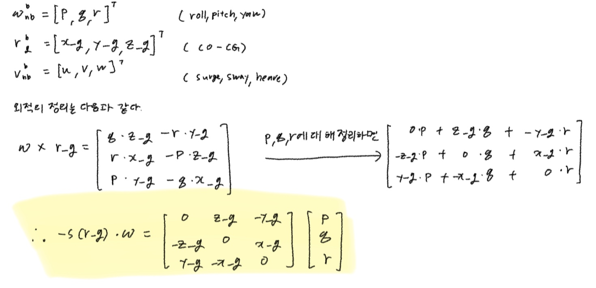
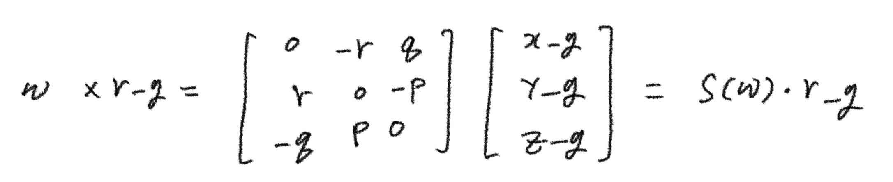
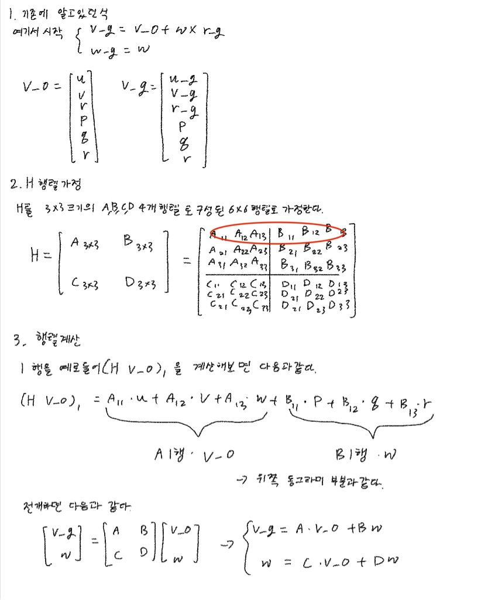
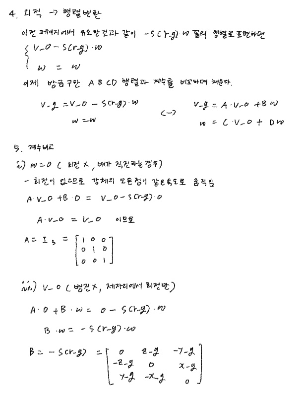
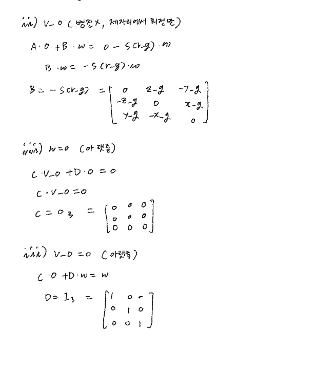
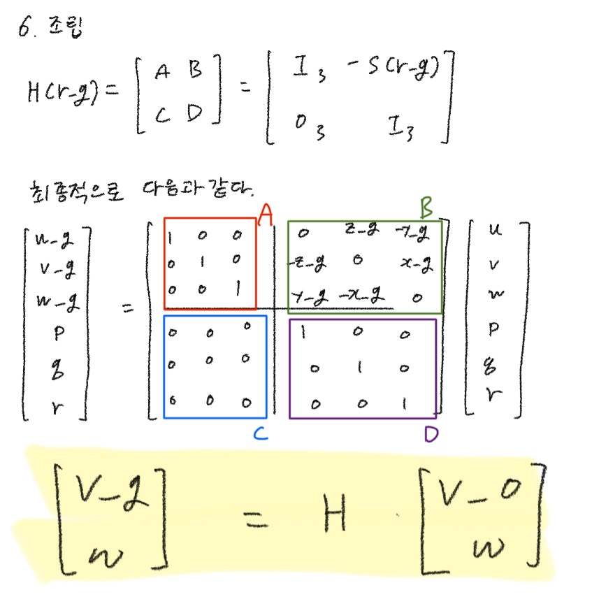

Rigid-Body Kinetics
한 줄로
CG 기준으로 세운 Newton-Euler 식을 CO 기준으로 옮기는 일.
Hᵀ( · )H샌드위치 한 번에M_RB와C_RB가 동시에 나온다.
M_RB ν̇ + C_RB(ν) ν = τ_RB
어디에 앉는가 — 6-DOF Marine Craft Model 의 Mν̇ + C(ν)ν + D(ν)ν + g(η) = τ 에서 M 과 C 의 강체 몫을 만든다. Transport Theorem 이 CG 기준까지 끌고 온 식을 받아 CO 기준으로 넘긴다. → 6-DOF Marine Craft Model
왜 필요한가
Transport Theorem 이 만든 식은 CG 기준이었다.
m [ v̇_ng + S(ω_nb)·v_ng ] = f_g
I_g·ω̇_nb − S(I_g·ω_nb)·ω_nb = m_g
틀리지 않았다. 쓸 수가 없을 뿐이다. v_g 는 “무게중심이 움직이는 속도”인데, 무게중심에는 센서를 못 박고 게다가 연료를 태우면 자리가 바뀐다. 상태변수의 정의가 항해 중에 변한다.
그래서 우리가 고른 고정점 CO 로 식을 다시 써야 한다. 필요한 건 딱 하나 — “CO 의 속도를 알 때 CG 의 속도는 얼마인가”.
물리는 v_g = v_o + ω × r_g 한 줄이 전부다
강체라서 r^b_g 는 BODY 에서 상수다. 그런데 NED 에서 보면 배와 함께 돈다 — Transport Theorem 이 이미 푼 문제다.
ⁿd/dt (r_g) = ᵇd/dt (r_g) + ω × r_g = 0 + ω × r_g
p_g = p_o + r_g 를 NED 에서 미분하면 그대로:
v_g = v_o + ω × r_g ← 속도의 덧셈. 회전목마 위를 걷는 사람
ω_g = ω ← 각속도는 안 바뀐다
두 번째가 시시해 보여도 이것도 식이다. 강체는 어느 점을 잡아도 같은 각속도로 돈다.
"고정"은 두 겹이다.
r_g는 BODY 에서만 상수고, ① NED 에서는 돈다(그래서ω × r_g가 남았다) ② 연료·화물로 천천히 변한다(애초에 CO 를 도입한 이유). 물리 상수가 아니라 BODY 에서 잰, 천천히 변하는 설계 파라미터다.
H 의 마이너스는 외운 게 아니라 ω 를 변수 자리로 끌어낸 대가다
외적을 행렬로 바꾸는 방법이 둘인데, 목적이 하나를 강제한다.
방법 A : ω × r_g = S(ω)·r_g → 행렬이 매 스텝 바뀐다. ✗
방법 B : ω × r_g = −S(r_g)·ω → 행렬은 상수, ω 가 입력. ✓
우리가 만드는 건 ν_o = [v_o; ω] 를 입력으로 받는 기계다. ω 가 변수고 r_g 는 설계도 상수이므로 B 만 쓸 수 있다. S(a)b = −S(b)a 를 여기서 쓴다.
H우상단이−S(r_g)인 건 부호를 외운 결과가 아니라ω를 곱해지는 쪽으로 옮기면서 딸려 나온 마이너스다.
블록 하나하나가 물리 문장이다
ν_g = H ν_o 를 성분까지 펼치면 여섯 줄이 나온다.
u_g = u + z_g·q − y_g·r
v_g = v − z_g·p + x_g·r
w_g = w + y_g·p − x_g·q
─────────────────────────────────
p_g = p q_g = q r_g = r
각 항의 형태가 전부 (회전율) × (그 축에서 떨어진 거리) — v = ωR 이 축마다 한 번씩 나온 것이다.
기호 충돌 —
r이 두 개다. yaw rater과 위치벡터r_g. 아래첨자g가 붙으면 위치, 없으면 각속도.
| 구조 | 읽는 법 |
|---|---|
S(·) 의 대각이 0 | 회전축 위의 점은 안 움직인다. u_g 줄에 p 가 없다 |
| 축 방향 거리가 빠짐 | u_g 줄에 x_g 가 없다. Moment of Inertia 의 “I_xx 에 x_g 가 안 들어간다”와 같은 사실 |
아래 절반이 I₃ | 자이로는 어디 붙여도 같은 값. 선속도·가속도만 lever arm 보정이 필요하다 |
세 번째가 실전에서 바로 쓰인다 — IMU lever arm 보정. MSS Hmtrx(r) 의 인자가 r_bg 가 아니라 r_bp(CO 에서 임의의 점 P) 인 이유도 이것. CG 든 IMU 든 같은 행렬을 쓴다.
에너지가 행렬 변환 규칙을 강제한다
H 는 벡터 옮기는 법만 알려준다. 행렬은 어떻게 옮기나 — 여기서 물리가 들어온다.
운동에너지는 물리량이라, 어느 점 기준으로 계산하든 같은 숫자여야 한다.
T = ½ ν_gᵀ M^CG ν_g = ½ (Hν_o)ᵀ M^CG (Hν_o) = ½ ν_oᵀ ( Hᵀ M^CG H ) ν_o
└──────┬──────┘
M_RB
앞뒤로 감싸는 이 형태를 합동변환(congruence) 이라 한다. 벡터는 H 한 번, 행렬은 두 번 — 에너지가 ν 를 두 번 먹는 이차형식이라서 그렇다.
같은 논리가 세 번 쓰인다.
속도 ν_g = H ν_o 벡터라서 한 번
관성 M_RB = Hᵀ M^CG H 에너지 T = ½νᵀMν 가 불변이므로
힘 τ_o = Hᵀ τ_g 일률 P = νᵀτ 가 불변이므로
Hᵀ는 벡터에는 안 쓴다. 행렬을 감쌀 때만 나온다.
평행축 정리는 별도 공식이 아니라 기준점 이동의 부산물이다
곱셈을 끝내면 우하단 블록에 이게 나온다.
I_b = I_g − m S²(r_g)
Moment of Inertia 에 이미 써 둔 평행축 정리다. 따로 유도하지 않았고, Hᵀ(·)H 를 곱했더니 나왔다.
비대각 블록은 “CG 가 CO 에서 얼마나 어긋났는가”의 값이다
r_g = 0 (CO = CG) → M_RB 블록대각. 밀기와 돌기 완전 분리
r_g ≠ 0 → 커플링 발생. 이것이 CO 를 쓰는 대가
6-DOF Marine Craft Model 이 “BODY 를 쓰는 대가는 J(η) 와 C(ν)ν” 라고 썼는데, 하나 더 있다 — CO 를 쓰는 대가가 M_RB 의 비대각 블록이다.
커플링 지도 — 규칙은 모멘트 = r × F 하나뿐이다. 어긋난 축과 수직인 힘만 회전을 만들고, 그 회전축은 둘 다에 수직이다.
| 어긋난 방향 | 켜지는 커플링 | 현상 |
|---|---|---|
x_g (앞뒤) | sway ↔ yaw · heave ↔ pitch | 옆으로 밀면 돈다 |
y_g (좌우) | surge ↔ yaw · heave ↔ roll | 전진만 해도 돈다 (화물 편적) |
z_g (상하) | surge ↔ pitch · sway ↔ roll | 가속하면 앞뒤로 기울고, 선회하면 눕는다 |
z_g 의 두 번째가 실제 배에서 이름이 붙은 현상 — 선회 시 내방 경사(heel during turn). Otter USV 처럼 r_g = [0,0,z_g]ᵀ 인 배가 여기 해당하고, 4-DOF 모델에 roll 을 넣는 이유이기도 하다.
자기 방향은 자기를 못 묶는다. x_g 가 있어도 surge 커플링은 없다 — 힘이 r_g 와 나란하면 r × F = 0. S(·) 대각이 0인 사실이 세 번째로 나온 자리.
C_RB 는 같은 샌드위치로 따라 옮겨진다
C_RB 는 새 물건이 아니라 Transport Theorem 의 ω× 항 두 개를 포장한 것이다.
M_RB ν̇ + C_RB(ν) ν = τ
└──┬──┘ └───┬───┘
원래 알던 것 회전좌표계의 대가
(F=ma, M=Iα) (ω× 항들)
변환도 똑같다.
M_RB = Hᵀ M^CG H
C_RB = Hᵀ C^CG H ← 같은 샌드위치
왜 같은가 — CG 기준 식 전체에 ν_g = Hν_o 를 넣고 앞에 Hᵀ 를 곱하면 두 항이 동시에 변환된다. 두 가지가 결정적이다.
① Ḣ = 0 r_g 가 BODY 상수라서 미분항이 안 생긴다
② τ_o = Hᵀτ_g 일률이 기준점에 무관해야 하므로
C_RB 에 (ν) 가 붙어 있는 것이 시스템이 비선형이 되는 지점이다. C_RB(ν)ν 는 속도의 이차항 — 배 동역학이 선형 제어이론으로 안 끝나는 이유의 절반.
반대칭성 — Coriolis 는 일을 하지 않는다
C_RB = −C_RBᵀ ⟹ νᵀ C_RB(ν) ν = 0 (모든 ν 에 대해)
운동에너지 수지를 쓰면 이 항이 통째로 사라진다.
Ṫ = νᵀ M ν̇ = νᵀτ − νᵀCν − νᵀDν − νᵀg
└─┬─┘
0
남는 건 “추진기가 넣는 에너지 − 물이 빼는 에너지”뿐. 선박 제어의 passivity 기반 설계와 Lyapunov 안정성 증명이 서 있는 토대가 이것이다. V = ½νᵀMν 를 Lyapunov 함수로 잡는 순간 C 가 저절로 빠진다.
Transport Theorem 에 "
C(ν)ν는 실제 힘이 아니라 좌표계 선택의 대가"라고 써 뒀는데, 반대칭성이 그 문장의 수학적 증거다. 진짜 힘이면 일을 할 텐데 안 한다.
C_RB 가 ν₂ 에만 의존하는 것이 해류를 공짜로 만든다
C_RB 안에는 S(ω) 와 S(I_bω) 뿐 — 선속도 [u,v,w] 가 한 번도 안 나온다.
C 는 유일하지 않다. 같은 Cν 를 주는 파라미터화가 여럿인데, Fossen 이 굳이 이 형태를 고른 이유가 이것이다.
해류는 선속도만 바꾸고 각속도는 안 바꾼다 (ω_r = ω)
↓
C_RB 가 ν₁ 을 안 보므로 방정식을 상대속도 ν_r = ν − ν_c 로 통째로 갈아 끼울 수 있다
MSS rbody.m 첫 줄 주석이 정확히 이 말이다.
% MRB * d/dt nu + CRB(nu) * nu = MRB * d/dt nu_r + CRB(nu_r) * nu_r = tau
% CRB = CRB(nu2) - Coriolis-centripetal matrix, independent of nu1수식
변환행렬 H — MSS Hmtrx(r)
⎡ I₃ Sᵀ(r) ⎤ ⎡ I₃ −S(r) ⎤
H(r) = ⎢ ⎥ = ⎢ ⎥ ν_g = H(r_g) ν_o
⎣ 0₃ I₃ ⎦ ⎣ 0₃ I₃ ⎦
┌ ┐
│ 1 0 0 │ 0 z_g −y_g │
│ 0 1 0 │ −z_g 0 x_g │
│ 0 0 1 │ y_g −x_g 0 │
H = │ ────────────┼──────────────────── │
│ 0 0 0 │ 1 0 0 │
│ 0 0 0 │ 0 1 0 │
│ 0 0 0 │ 0 0 1 │
└ ┘
관성행렬 — M_RB = Hᵀ M_RB^CG H, M_RB^CG = diag(mI₃, I_g)
⎡ m I₃ −m S(r_g) ⎤
M_RB = ⎢ ⎥ I_b = I_g − m S²(r_g)
⎣ m S(r_g) I_b ⎦
⎡ m 0 0 │ 0 m z_g −m y_g ⎤
⎢ 0 m 0 │ −m z_g 0 m x_g ⎥
⎢ 0 0 m │ m y_g −m x_g 0 ⎥
M_RB = ⎢─────────────────────┼────────────────────────⎥
⎢ 0 −m z_g m y_g │ I_x −I_xy −I_xz ⎥
⎢ m z_g 0 −m x_g │ −I_yx I_y −I_yz ⎥
⎣−m y_g m x_g 0 │ −I_zx −I_zy I_z ⎦
Coriolis 행렬 — C_RB = Hᵀ C_RB^CG H
⎡ m S(ω) −m S(ω) S(r_g) ⎤
C_RB(ν) = ⎢ ⎥
⎣ m S(r_g) S(ω) −S(I_b ω) ⎦
r_g = 0 이면 ⎡ m S(ω) 0₃ ⎤
⎢ ⎥ → C_RB ν = [ m ω×v ; ω×(I_g ω) ]
⎣ 0₃ −S(I_g ω) ⎦ = Transport Theorem 의 두 항 그대로
읽는 법
M_RB의 좌상·우하는 아는 것(F=ma, 평행축 관성). 새 정보는 비대각뿐이고 그건r_g의 값이다.C_RB에서 선속도가 안 보이면 파라미터화가 맞게 된 것이다.M_RB는 상수,C_RB는 매 스텝 재계산. 이 차이가 곧 선형/비선형의 경계.
성질
| 성질 | 근거 | 실전에서 |
|---|---|---|
M_RB = M_RBᵀ | 합동변환이 대칭을 보존 (HᵀMH)ᵀ = HᵀMᵀH | 독립 성분 21개 |
M_RB > 0 | det H = 1 이라 항상 가역, 양정치 보존 | ν̇ = M⁻¹(τ−⋯) 가 항상 풀린다 |
C_RB = −C_RBᵀ | 외적의 반교환성 | νᵀCν = 0 → Lyapunov·passivity |
C_RB = C_RB(ν₂) | 파라미터화 선택 | 해류를 ν_r 치환으로 흡수 |
검산
| 조건 | 결과 | 맞는 이유 |
|---|---|---|
r_g = 0 일 때 H | I₆ | CO = CG 면 옮길 게 없다 |
r_g=[2,0,0]ᵀ, v_o=0, ω=[0,0,r]ᵀ | v_g = [0, 2r, 0]ᵀ | 회전목마. ω × 반지름 = 2r, 우현 방향 |
r_g = 0 일 때 M_RB | diag(mI₃, I_g) | 커플링은 어긋남에서만 나온다 |
r_g = 0 일 때 C_RB ν | [mω×v ; ω×(I_gω)] | Transport Theorem 결과와 일치 |
화물 좌현 편적(y_g<0)한 배를 CO 에서 전진 추력 | 선수가 좌현으로 돌아감 | N = y_g·X < 0. 쇼핑카트 오른쪽 손잡이만 밀면 왼쪽으로 틀어진다 |
쓰러스터 z_p, CG z_g 일 때 pitch | I_y q̇ = (z_p − z_g)·X | CO 가 소거된다. 기준점을 어디 잡든 물리는 불변 — 유도가 맞았다는 증거 |
헷갈렸던 점
”쓰러스터가 CG 보다 아래라서 뱃머리가 들린다 — 이게 M_RB 커플링이다”
물리는 맞는데 항을 잘못 짚었다. 둘은 다른 자리에 산다.
쓰러스터가 CG 보다 아래 → 실제 모멘트 → τ 에 들어간다
CG 가 CO 에서 어긋남 → M_RB 비대각 → 왼쪽 항에 들어간다
M_RB 는 쓰러스터 위치를 모른다. 질량분포만 알지 힘을 어디서 주는지는 관심이 없다. 그런데 두 식을 같이 풀면 I_y q̇ = (z_p − z_g)X 가 나와 CO 가 소거되고, 결국 “쓰러스터에서 CG 까지의 거리”만 남는다. 문장은 맞고, 그 사실이 M_RB 한 곳에 적혀 있는 게 아니라 M_RB 와 τ 가 협력해서 만든다.
”ν_g = Hᵀ ν_o 아닌가”
ν_g = H ν_o 다. Hᵀ 는 벡터를 옮길 때는 안 쓴다. 행렬을 Hᵀ(·)H 로 감쌀 때만 나온다. 벡터는 한 번, 이차형식은 두 번.
”평행축 정리는 관성모멘트의 별도 공식이다”
Hᵀ M^CG H 를 곱하면 우하단에 저절로 나온다. 기준점 이동의 부산물이지 따로 외울 공식이 아니다.
”ω × r_g 를 S(ω)r_g 로 써도 되지 않나”
값은 같지만 쓸 수 없다. ω 가 변수라서 행렬이 매 스텝 바뀐다. −S(r_g)ω 로 뒤집어야 상수 행렬 H 안에 박힌다.
”C(ν)ν 는 배에 걸리는 실제 힘이다”
Transport Theorem 에서 한 번 정리했는데, 여기서 증거가 나왔다 — 반대칭이라 νᵀCν = 0, 즉 일을 하지 않는다. 진짜 힘이면 에너지를 주고받을 텐데 안 한다.
내가 실제로 써본 곳
-
2026-09-10 —
H(r_g)유도 전 과정을 손으로 재현. 랩미팅 발표자료 제작과 함께 진행.외적 → 행렬변환부터 블록 계수비교, 6×6 조립까지 6장. 오류 없음 — 강의를 다시 보지 않고 재현됨.① 실제 선박 변수(
p,q,r·x_g,y_g,z_g)로 외적을 펼치고ω로 묶어−S(r_g)를 얻는다
② 같은 외적을r_g로 묶으면S(ω)가 나온다 — 두 형태를 나란히 놓고 비교
③H를A·B·C·D네 블록으로 두고, 블록곱이 성분곱의 괄호치기일 뿐임을 1행으로 확인
④ω=0과v_o=0을 대입해A = I₃,B = −S(r_g)를 고립시킴
⑤ 아랫줄에 같은 절차로C = 0₃,D = I₃
⑥ 조립 — 6×6 전개에 네 블록을 색으로 표시
위 손계산·발표자료에서 잡힌 슬립 (2026-09-10)
r_g로 적었다.w_g(heave) 가 맞다.r_g는 위치벡터라 기호가 겹친다. p06 에서는w_g로 바르게 적혀 있으므로 그 장에서만 난 전사 실수. ② 발표자료에 "선체에 고정된 IMU 위치 CO" 라고 적었는데, CO 는 IMU 위치가 아니다. CO 는 제어 목적에 맞춰 우리가 고르는 원점이고, IMU 는r_bp로 따로 지정한다. 실무에서 CO 를 IMU 자리에 두는 선택은 흔하지만 정의가 아니다. ③ 발표자료에v_o = [v_o ; ω]로 적힌 곳 — 6×1 전체는ν_o(뉴)다. 6-DOF Marine Craft Model 이 경고한νvsv충돌이 그대로 재발.① p03 의 상태벡터 3번째 성분을
-
발표자료 —
C:\Archive\제어공학특론\Weekly Study Report_26.09.10_전유식.pptx(6장)
아직 코드로 구현한 적 없음. 다음에 붙을 자리는 이렇다.
- 6-DOF Marine Craft Model 의 시뮬레이션 루프 —
ν̇ = M⁻¹(τ − Cν − Dν − g)에서M,C의 강체 몫이 이 노트의 결과다 - IMU lever arm 보정 —
H의 아래 절반이I₃라 자이로는 그대로, 가속도계만r_bp로 보정. ANSL 에서 IMU 를 CO 아닌 곳에 달았을 때 바로 쓰는 것 - Capstone Otter USV 의 Otter 모델이
r_g = [0,0,z_g]ᵀ구조라 surge↔pitch, sway↔roll 커플링을 갖는다
아직 안 한 것 — M_A(added mass), D(ν)(감쇠), g(η)(복원력). 지금까지는 진공 속의 배다.
→ 2026-09-26 에 이어서 정리함: Hydrodynamic and Restoring Forces (Lagrangian 파라미터화 m2c, 복원력, 부가질량, 해류, 3-DOF 분리)
참고
- 강의 : 제어공학특론 — Dynamic Model of Marine Craft, 슬라이드 58~68 (윤원근 교수, CNU AVSE)
- 교재 : T. I. Fossen, Handbook of Marine Craft Hydrodynamics and Motion Control 2nd ed., §3.3
- Lecture Notes TTK 4190 (NTNU, Fossen)
- 코드 : MSS Toolbox —
rbody.m,Hmtrx.m,Smtrx.m— https://github.com/cybergalactic/MSS - 관련 노트 : 6-DOF Marine Craft Model · Transport Theorem · Moment of Inertia · Rotation Matrix · Euler Angle Rates